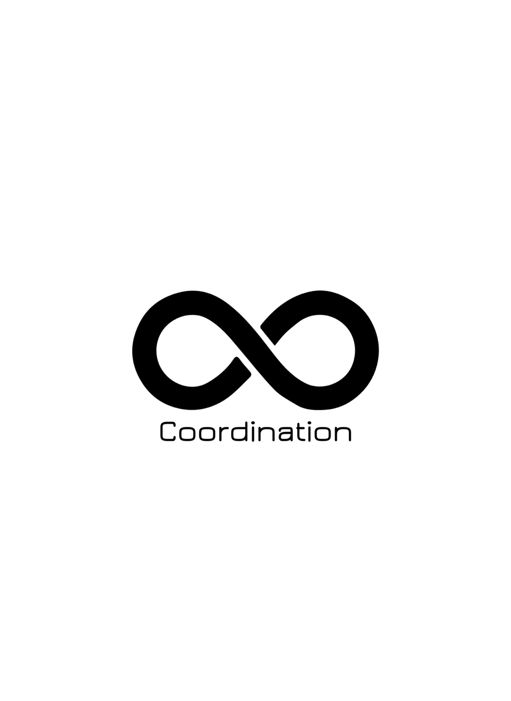

\
coordination
동아리 인스타그램
대학스포츠의학 연합 인스타그램
동아리 회장SNS
동아리 부회장SNS
헤에엑? 햄스트링이 땡기는데 대퇴사두 운동을 해서 푼다고!?
교정운동 하는데 발부터 봐야한다고?
척주(척추)의 기능이 좋아야 사지의 기능이 좋아진다?
후방전 효과란?
통증이 있어도 운동하는게 좋다고?
움직임의 주의력을 바깥에 두라고?
누가믿냐? 목이 아픈데 눈 때문이란걸?
세상에 어떤 바보가 젓가락질 못하는데 숟가락 가지고 연습하냐?
보충제 이거 정말 효과가 있을까?
쪼개고 나누는걸 좋아하는 인류
이론과 기술사이
관절 가동술
게슈탈트 시리즈.1
게슈탈트 시리즈.2
게슈탈트 시리즈.3
게슈탈트 시리즈.4
게슈탈트 시리즈.5
게슈탈트 시리즈.6
게슈탈트 시리즈.7
게슈탈트 시리즈.8
게슈탈트 시리즈.9
게슈탈트 시리즈.10
게슈탈트 시리즈.11

Who we are?
2020년 개설된 스포츠의학 동아리 홈페이지 입니다. 다양한 정보 및 활동사진을 공유하겠습니다.
information